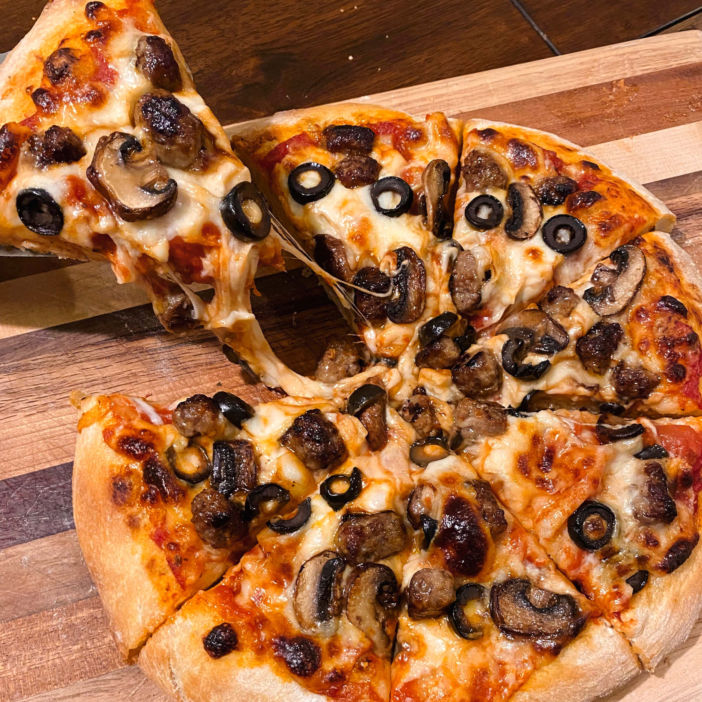
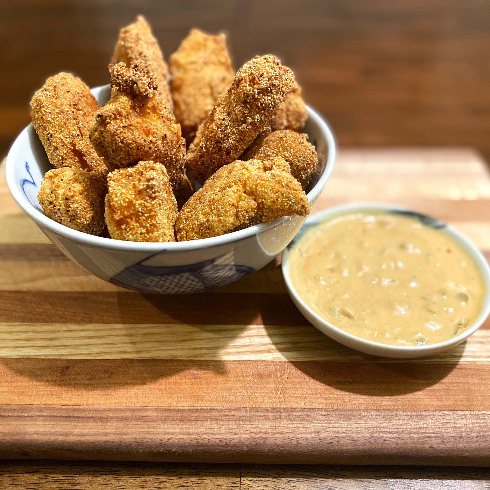
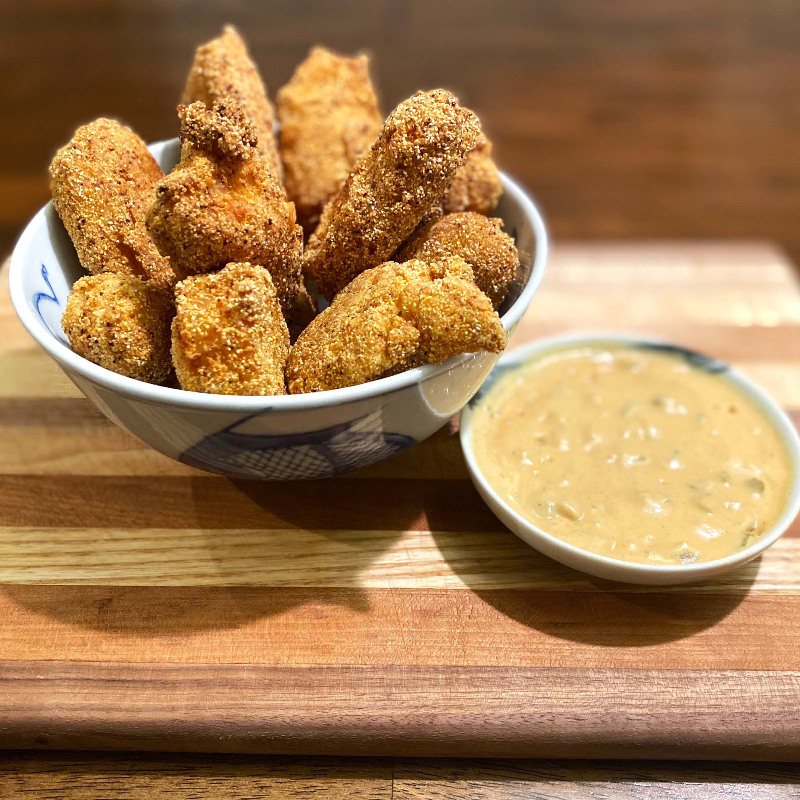
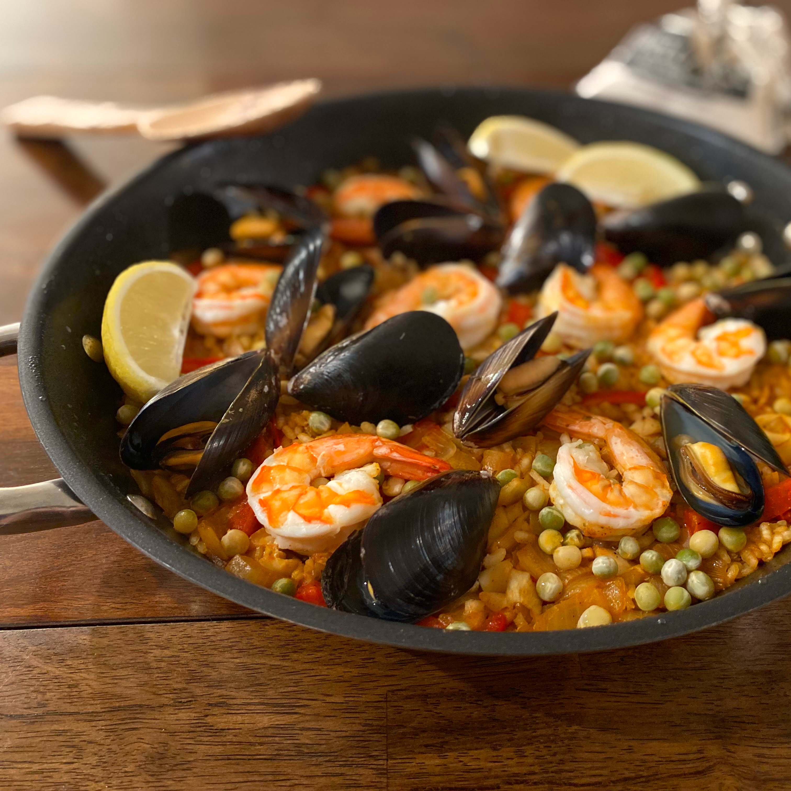

Food diary
Welcome to my collection of cooks and bakes! 😋
I baked frequently during high school but fell out of it as I became a busy engineering student. Since COVID hit, I re-discovered my passion in making food and strived to cook something new at least once a week to de-stress and improve my culinary skills.
I never really photographed my food before, but am trying to learn more about food photography and how to edit images with PhotoShop. Here are some photos of my recent creations - I hope you aren't hungry! 😆
Sausage Pizza

Fried Cod +
Honey Mustard Relish 
Honey Mustard Relish 
Seafood Paella
